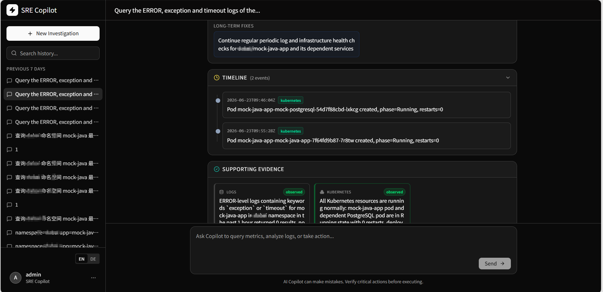

Project note / AI Agent
让 Agent 的工具调用收得住
做智能运维助手时，我很快发现：让模型调用工具不难，难的是让每次调用都有范围、有状态，失败以后还能解释。这个页面只写我从那段工作里留下来的工程判断。

起点不是做一个会聊天的页面
用户问的是“为什么这个服务刚才变慢了”，答案却不在对话历史里。它可能藏在一段指标、一批日志、某个 Pod 的事件，或者一次刚发生的发布里。模型如果拿不到这些事实，再顺畅的回答也只是猜。
所以一开始我就把对话放在次要位置。主线是：问题进来以后，系统怎样拆成几步，每一步去哪里取证，取回来的东西又怎样留给下一步。
先把工具边界收紧
Agent 很容易给人一种“什么都能做”的错觉。实际接上集群后，越通用的工具越危险，也越容易查出一大堆没有用的数据。我最后倾向于让每个工具只完成一件明确的事。
- 集群、命名空间和资源范围必须显式传入，不能让模型自己猜。
- 时间窗口设默认值和上限，避免一句“最近有问题吗”扫完整个历史。
- 工具输入与输出都结构化，错误也作为结果返回，而不是消失在日志里。
- 查询类工具和变更类动作分开，后者必须经过额外确认并留下审计记录。
执行循环要能停下来
用事件保存状态
一次排查可能经历多轮思考和工具调用。我没有把它当成一整段字符串，而是拆成计划、调用、返回、总结等事件。这样前端能流式展示，后端也知道中断发生在哪一步。
给循环加上限
Agent 不会天然知道什么时候该放弃。工具次数、上下文长度和单次执行时间都需要边界。达到边界后，与其继续凑答案，不如明确告诉用户还缺什么证据。
长对话只留下有用的部分
日志原文和工具返回很快就会挤满上下文。我会保留结论、资源标识和时间范围，把已经使用过的大段原文压成摘要。这样做不是为了让模型记得更多，而是让它少重复查同一件事。
失败路径比成功演示重要
模型会超时，监控接口会返回空数据，集群权限也可能临时变化。这些情况如果只抛一个统一错误，用户看到的就是“Agent 卡住了”。我更希望页面能说清楚：哪一步失败、已经拿到什么、还能不能换一条路继续。
模型服务和工具服务因此被分开处理。前者可以切换或降级，后者则保留自己的超时和健康状态。即使最终没有得出根因，已完成的排查步骤也不应该丢掉。
现在回头看
这个项目让我确定了一件事：Agent 的价值不在于“像人一样操作所有东西”，而在于把原本散落的查询步骤组织起来，同时诚实地标出它不知道的部分。
如果再做一遍，我会更早统一事件协议，并把执行记录设计成可回放的数据。那会让调试、评估和复盘都简单很多，也能更快区分是模型判断错了，还是工具给错了事实。